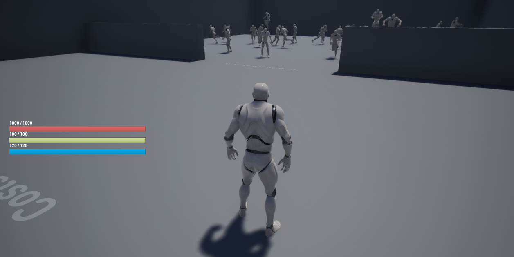
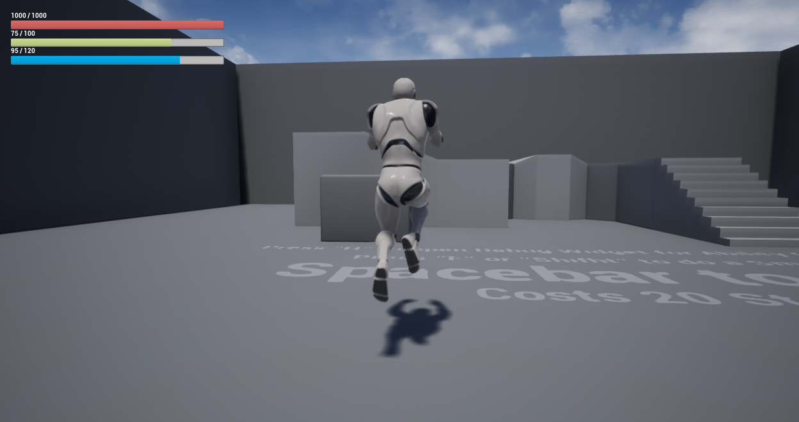
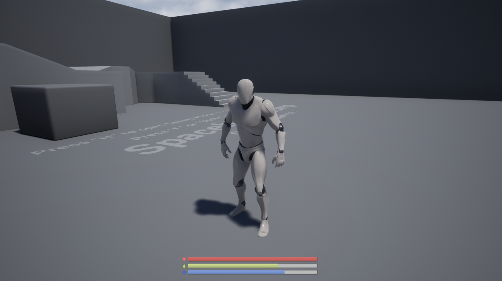
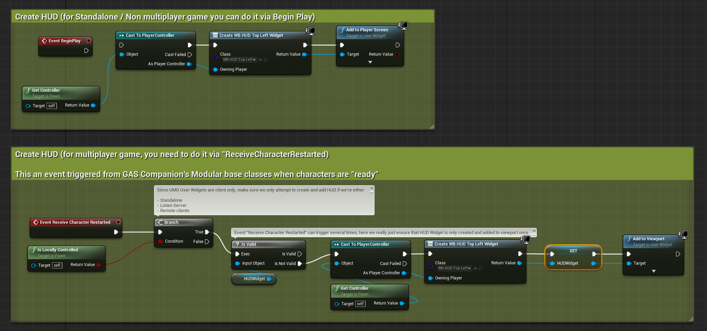
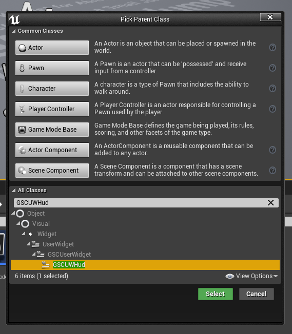
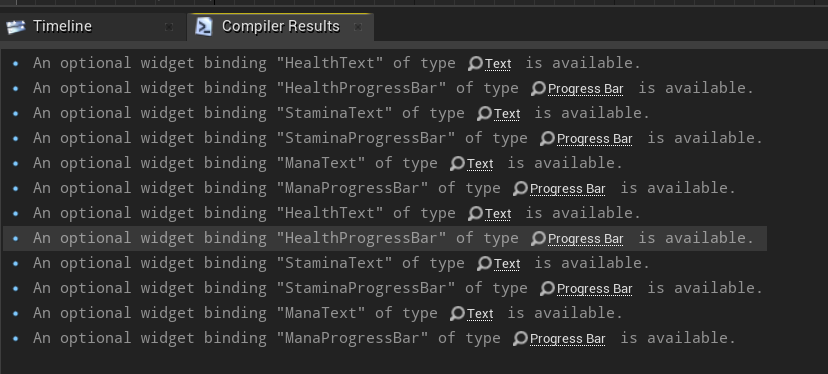
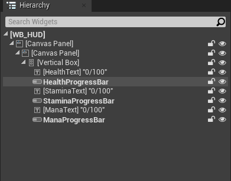
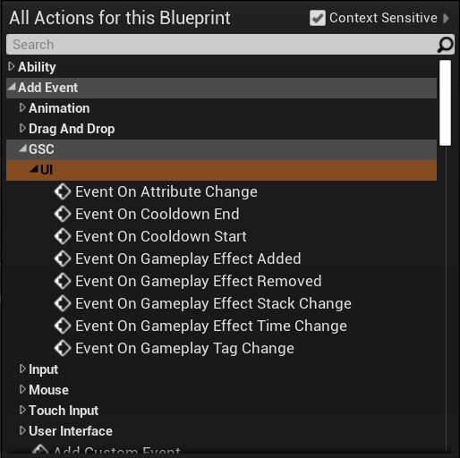
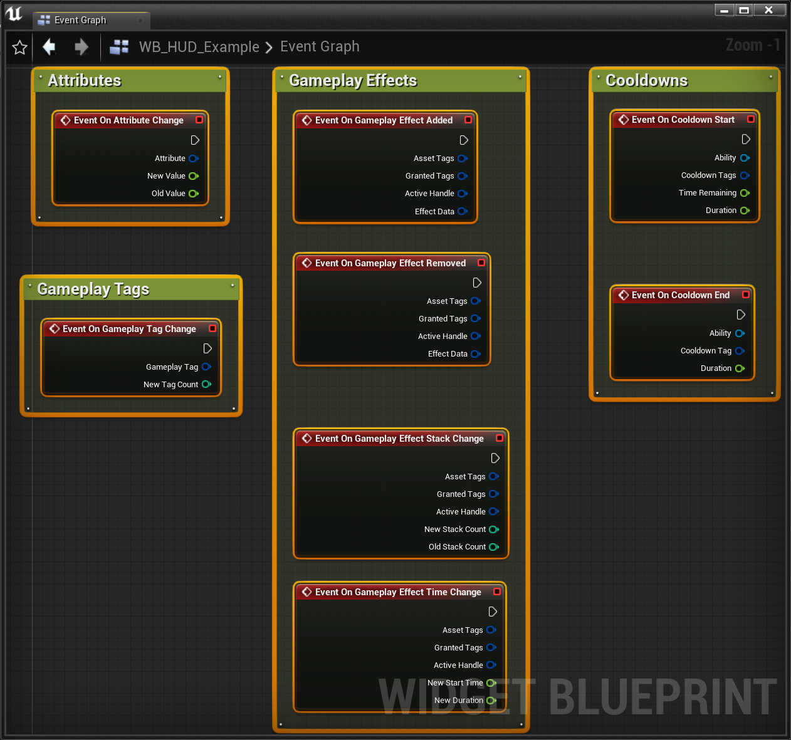

The plugin comes with a basic HUD UI and User Widgets set up to work with Character Attributes from GAS.
They are driven by C++ with Companion Core Component using AttributeChangeDelegate to update the HUD and respond to changes in Player Attribute values.
GSCUWHud
GAS Companion provides three basic HUD Widget Blueprint for demonstration purpose:
WB_HUDDefault Widget as seen in the above pictureWH_HUD_TopLeftSame Widget but with a slight variation in the positioning of the attributes progress barWB_HUD_MinimalistAnother HUD variation, this time with a minimalist feel
They all inherit from GSCUWHud, a class providing a set of Blueprint exposed events related to Ability System (Attribute Changes, Cooldowns, Gameplay Effects or Tags added / removed, etc.). It also binds three progress bars ({Health, Stamina, Mana}ProgressBar) and Text ({Health, Stamina, Mana}Text) widgets, these are optional but if the User Widget (UMG) Blueprint is defining in the Widget Tree progress bars or text widget with the same name, those widgets will be bound to related attribute changes in GSCAttributeSet, without having to implement the Blueprint logic in the UMG event graph for those attributes.
WB_HUD

WB_HUD_TopLeft

WB_HUD_Minimalist

Icons licensed under CC BY 3.0 (game-icons.net - authors: Skoll, sbed and Delapouite)
Adding to Viewport
Creating the widget and adding to viewport can be done from the Pawn Blueprint, on BeginPlay for standalone single player game, or ReceiveCharacterRestarted (or Pawn Restarted for Pawns) for remote clients.

Designing your own Widget
Regarding UI, GAS Companion tries to follow the Logic in C++, Visuals in Blueprints recommendation.
That's why the three Widget Blueprints we saw earlier all inherit from UGSCUWHud which is responsible for all the logic, and uses several meta=(BindWidget) UPROPERTY to communicate with Blueprints.
If you create a Widget Blueprint with UGSCUWHud as a parent class (Right Click in Content Browser > Blueprint Class > GSCUWHud)

And open the widget, you'll see a bunch of warnings

Those are all the meta=(BindWidgetOptional) UPROPERTY UGSCUWHud is using to update the UI. You just need to create the appropriate Widget with the exact same name in your UserWidget hierarchy.

Once defined, all the warnings will disappear and your newly created HUD should be fully functional (assuming your using GAS Companion default attributes)
Exposed Events
Introduced in 2.1.0, GSCUWHud is now able to respond to a lot more events related to the Gameplay Ability System.


LaunchPad: CustomHUD
New addition to the launch pad is the "CustomHUD" map, which demonstrates advanced use case for HUD Widgets. The implementation is basic and one of many possible ways of doing it, but they're all using the exposed events we mentioned previously.
You'll see examples of custom attributes handling with the XP bar, listening for Gameplay Effect changes, added / removed / time change (or refresh) with the burning effect, and cooldown UI display with three basic abilities.